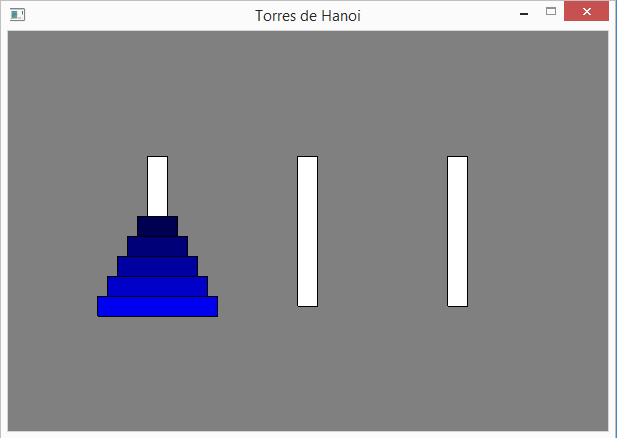
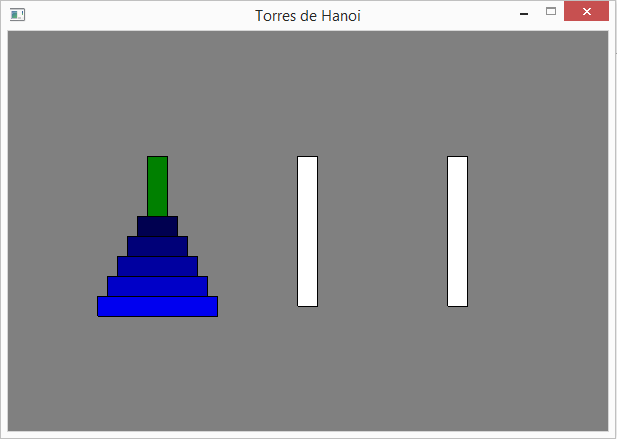
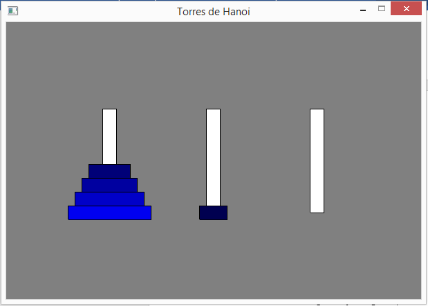
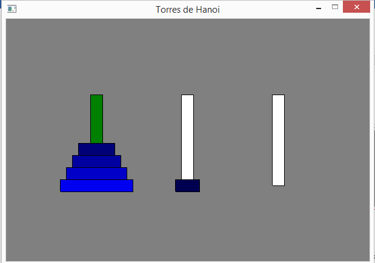
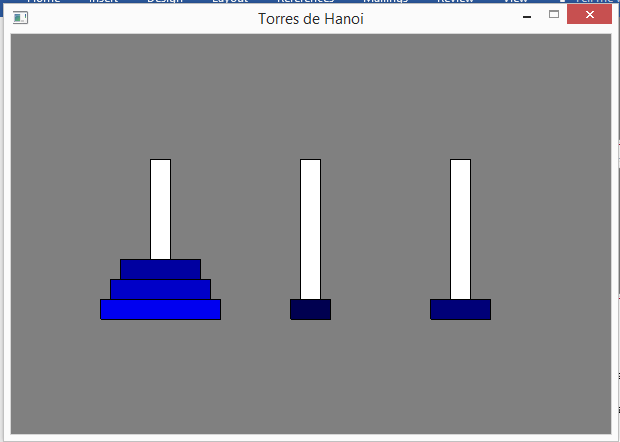
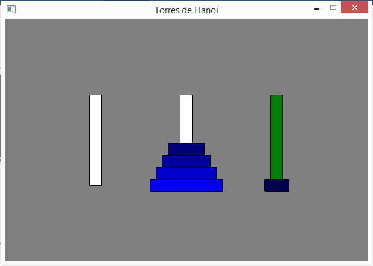
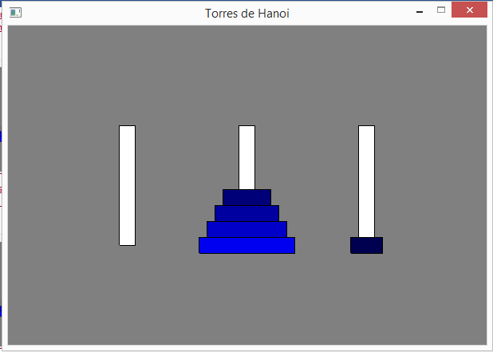
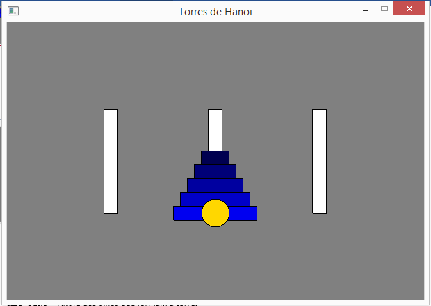

Tower of Hanoi
Tower of Hanoi it's not exactly a game, but a "puzzle" that challenges the player's working memory to solve a problem that seems simple, but that is relatively laborious ...
The structure of the game has 3 pins, one of which has, initially, several disks positioned in decreasing order of diameter (the largest at the base of the game and the smallest at the top of the disk stack (see figure) - a stack of disks. The problem consists of passing all the disks from one pin to another, with the following restrictions:
1- you can only move one disc at a time;
2- a disc cannot be positioned on top of a smaller one.
The number of discs may vary ... Proportionally, the degree of difficulty will increase with the number of discs.

Tower of Hanoi - wikipedia
This is also a typical and very interesting example of using stacks, since only the disc placed at the top ofeach pin can be removed and, when inserting a disc on a particular pin, it is always on top. That is, the last disc to be placed on a pin will always be the first to be removed from that pin (LIFO - Last In First Out).
1 Exemplifying the game
This game will be developed in a graphic environment, using the p5 module. In the figure that follows, we see the initial screen, in which the left pin appears with 5 discs of various shades of blue. In this case, the larger the diameter of a disc the lighter the blue with which it is painted.

The game is controlled by the keys 1, 2and 3.
The following two figures show what happened when the player started by pressing key 1 and then key 2, indicating that the disc at the top of pin 1 (pin now painted in green), will move to the top of pin 2.
 
Continuing to play. Now, if the player presses key 1, pin 1 changes to green, as shown in the figure below, to the left. The figure on the right shows what would happen if, by mistake, after the 1 key, the player presses key 2. This move is not alowed, as it is not possible to place a disc on a smaller one.

In this situation, you would have to choose pin 1 again, pressing key 1, followed by the choice of pin 3, pressing key 3. The result is shown in the following two figures.

After a few moves, we ended up reaching the goal, that is, placing all the disks on another pin, as shown in the sequence of the following three figures, by pressing key 3, followed by key 2. In the last figure, the yellow ball indicates that the game has ended successfully.
 

|
|
It is not foreseen, but it would be very interesting to have, in a corner of the game window, a visualization of the number of disk movements, carried out so far. Thus, at the end of the game, we would have access to the number of moves needed to reach the goal. Take this as a challenge (optional)... |
2 Game configuration
Let's define the following literals (constants):
· LARGURA - width of the graphic window;
· ALTURA - height of the graphic window;
· DISCOS - list with the disks to be used (defined by diameter);
· ESPESSURA_DISCO - thickness of each disc;
· ALT_PINO - Height of the pins that form the tower.
And we will also need two global variables:
· torres - a list that will store the 3 towers of the game;
· jogada - the number of the pin selected by the player.
Start your file with the source code with the following instructions:
from p5 import *
# definicoes globais
LARGURA = 600
ALTURA = 400
DISCOS = [120, 100, 80, 60, 40]
ESPESSURA_DISCO = 20
ALT_PINO = 150
# variáveis globais
torres = []
jogada = 0
3 Abstraction "Pilha" (Stack)
Each pin acts as a stack, as was initially mentioned. So, we need the "Pilha" abstraction.
There is no data abstraction in Python that fully implements the Stack concept, so we will use the Stack abstraction defined in section 10.3:
###################
# ABSTRAÇÃO PILHA #
###################
# construtor
def cria_pilha():
return []
# seletores
def pilha_vazia(pilha):
if len (pilha) == 0:
return True
else:
return False
def topo_da_pilha(pilha):
if not pilha_vazia(pilha):
return pilha[-1]
else:
return False
# modificadores
def poe_na_pilha(pilha, elem):
pilha.append(elem)
def tira_da_pilha(pilha):
if not pilha_vazia(pilha):
return pilha.pop()
else:
return False
###################
|
|
Analyze the functions topo_da_pilha () and tira_da_pilha (), both with the same parameter, and indicate how they differ. Will both functions be necessary? Justify. |
4 Game structure
The relatively simple game will only have the functions associated with the module p5:
· setup() - game setup;
· draw() - game loop.
· key_pressed() - responds to key press events.
5 Game setup
The game setup follows the following algorithm:
1. creates a graphic window;
2. create the 3 towers using a list of 3 stacks and fills the first tower with the disks.
# inicialização do jogo
def setup():
global torres
# cria janela
title("Torres de Hanoi")
size(LARGURA, ALTURA)
# cria as 3 torres e preenche primeira torre
torres = [cria_pilha(), cria_pilha(), cria_pilha()]
for disco in DISCOS:
poe_na_pilha(torres[0], disco)
6 Game loop
The game loop only draws the entire game level, both pins and discs, and checks whether the player has managed to place all discs on another pin (the end of the game):
1.
draws the game pins and the disks.
If a pin has been selected by the player for her/his move, it is drawn in
green. Otherwise white;
2. Checks whether the player has managed to move all the disks to another pin;
Insert the following code, which implements the game cycle, drawing the game level:
# ciclo de jogo
def draw():
global torres, jogada
# posiciona as torres
ox = [0,0,0]
ox[0] = LARGURA//4
ox[1] = LARGURA//2
ox[2] = 3 * LARGURA//4
oy_base = ALTURA//2 + ALT_PINO//2
# desenha as torres e respetivos discos
background("gray")
rect_mode("CENTER")
for i in range(len(torres)):
if jogada == i+1: # inicialmente, jodaga = 0
fill("green")
else:
fill("white")
rect((ox[i], oy_base-ALT_PINO//2), ESPESSURA_DISCO, -ALT_PINO)
alt = oy_base
for disco in torres[i]:
fill(0, 0, disco*2) # B, de RGB, proporcional ao diâmetro do disco
rect((ox[i], alt), disco, ESPESSURA_DISCO)
alt -= ESPESSURA_DISCO
# verifica se ganhou
if torres[1] == DISCOS or torres[2] == DISCOS:
fill("gold")
if torres[2] == DISCOS:
circle((ox[2], oy_base), ESPESSURA_DISCO*2)
else:
circle((ox[1], oy_base), ESPESSURA_DISCO*2)
no_loop() # termina jogo
|
|
Function no_loop(),eliminates the repetition of the function call draw(),so the player can only leave the game.
Analyze the code carefully to understand how the game screen is drawn.
|
7 Input from the player
The player interacts with the game using the "1", "2" and "3" keys, which allow her/him to select the source pin, and then the destination pin. After which the top disk is moved, if the destination pin has a larger diameter pin as the top, or is empty.
The code is as follows, which is based on a multiple selection structure:
# controla a interação com o utilizador através do teclado
def key_pressed():
global jogada, torres
# converte tecla em inteiro (1 a 3)
tecla = ord(str(key)) - ord("0")
|
|
Function ord()returns an integer value related to the character code provided as an argument. In this case it is the ASCII code. Thus, the key pressed ("1", "2" or "3") will be converted into integers 1, 2 or 3, by subtracting the code from the character "0".
|
|
|
Variable jogada represents a state machine, which allows to know if the player will select the source pin (state 0) or if s/he will select the destination pin (state 1). In the latter case, the disc moves between the two pins. The following alternative decision structure takes different actions depending on the state value.
|
# verifica teclas premidas
if jogada == 0:
# seleciona torre
if tecla >= 1 and tecla <=3:
jogada = tecla
else:
# move disco do topo
if tecla >= 1 and tecla <=3:
# so pode colocar sobre discos maiores
if not pilha_vazia(torres[jogada-1]) \
and (topo_da_pilha(torres[tecla-1]) > topo_da_pilha(torres[jogada-1]) \
or pilha_vazia(torres[tecla-1])):
poe_na_pilha(torres[tecla-1], tira_da_pilha(torres[jogada-1]))
jogada = 0
if __name__ == '__main__':
run()
8 Final challenge
Being a "puzzle", it would be interesting if the computer was able to determine the solution automatically. In reality, the algorithm that solves this problem is relatively simple.
Read carefully this very interesting explanation from Khan Academy...
The following algorithm solves the problem by creating a list of moves (tuples with the origin and destination of the movements)...
jogadas = []
# Algoritmo recursivo da torre de Hanoi
def hanoi(torre, origem, destino):
global jogadas
if len(torre) == 1:
jogadas.append((origem, destino))
else:
livre = 6 - (origem + destino)
hanoi(torre[1::], origem, livre)
jogadas.append((origem, destino))
hanoi(torre[1::], livre, destino)
|
|
Notice an interesting feature of this algorithm. Problem hanoi()makes two calls to the subproblem hanoi()...That is, this function calls itself. It is a recursive function.
|
To learn how to play just print the playlist:
hanoi(DISCOS, 1, 3)
for (o, d) in jogadas:
print("Move disco da torre", o, "para a torre", d)
Adapt this algorithm to animate the resolution of the "puzzle" automatically, animating its resolution "step by step" by pressing a key (for example the "space" key).
|
|
Share this interactive application!
|